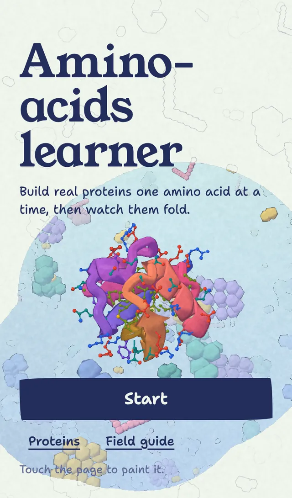
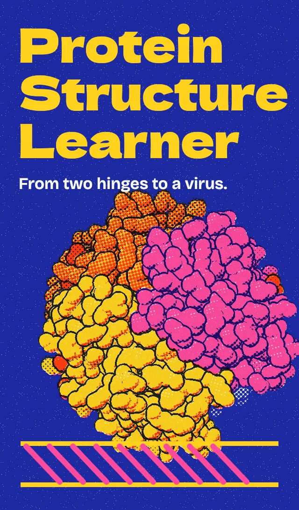
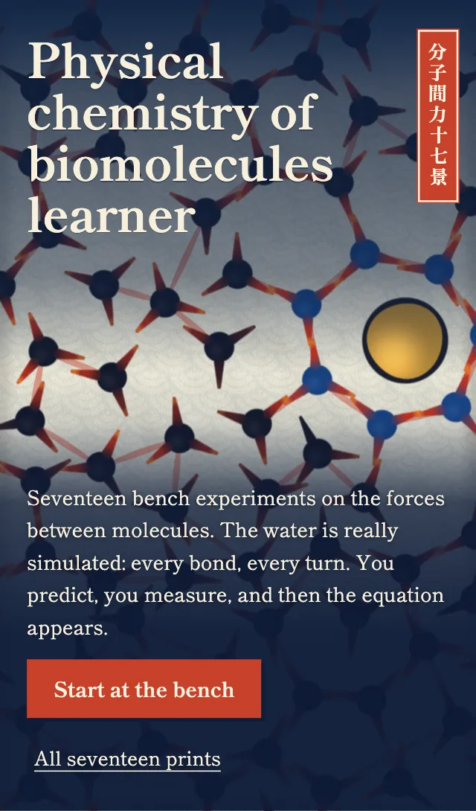
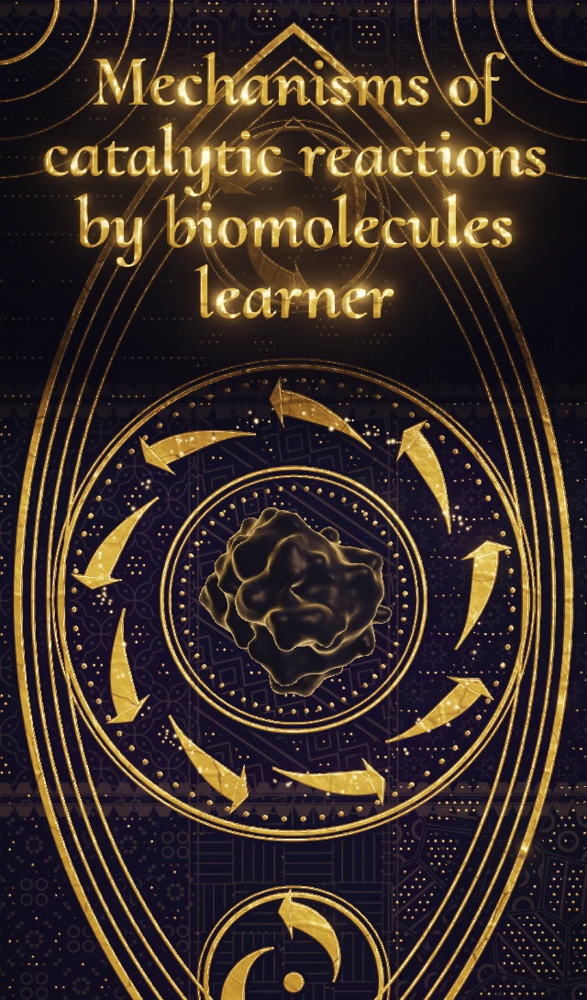
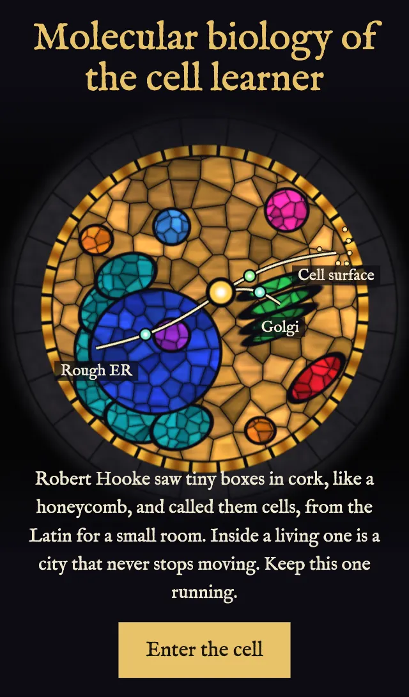
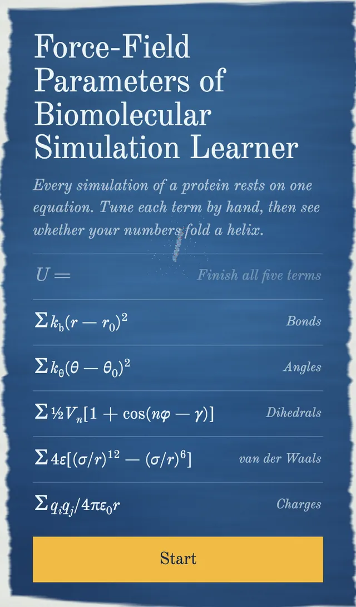
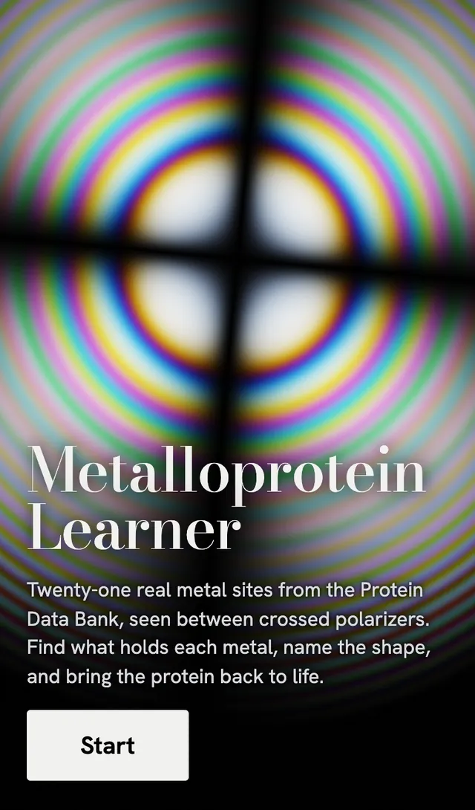
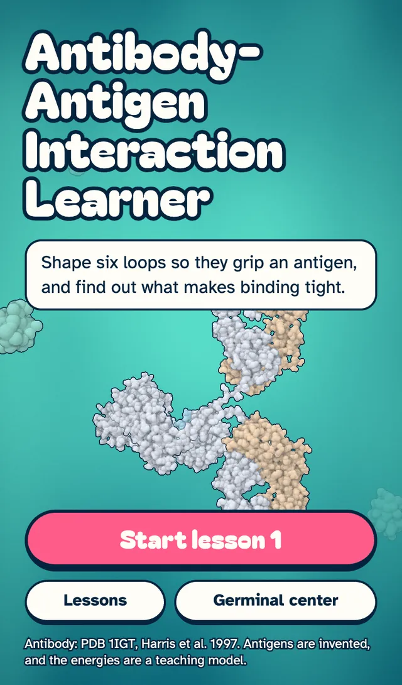

-

Amino-acids learner Build real proteins one amino acid at a time, then watch them fold. -

Protein Structure Learner From two hinges to a virus: hydrogen bonds, core packing and the patches where proteins meet. -

Physical chemistry of biomolecules learner Live water and ions at the bench: measure where the hydrophobic effect and other forces come from. -

Mechanisms of catalytic reactions by biomolecules learner Push the electrons yourself on real active sites, and hear a mutant slow the gamelan down. -

Molecular biology of the cell learner Work as eight molecular machines through one day of a cell, then break each with a real drug. -

Force-Field Parameters of Biomolecular Simulation Learner Develop dihedrals, CMAP, charges and van der Waals, then fight sampling to reach a protein's metastable states. -

Metalloprotein Learner Find what holds the metal in 21 real sites, and name the shape it makes. -

Antibody-Antigen Interaction Learner Shape six loops so they grip an antigen, and find out what makes binding tight.